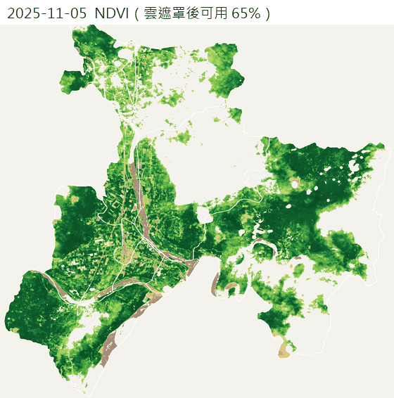

瑞穗生活地圖 #9 稻作與文旦衛星
地圖：選一個日期看 NDVI
各村過去 24 個月的 NDVI
縮時動畫（近 12 個月）

雲遮罩與影像紀錄
每張影像的日期與雲量
方法與限制
影像來源：Element84 Earth Search（AWS 上的 STAC 目錄）Sentinel-2 L2A。免金鑰、資料為 Cloud-Optimized GeoTIFF，只讀瑞穗範圍的裁切，不用下載整張。
雲遮罩：用 L2A 的 SCL 場景分類，只保留「植被、裸地、水」三類像元；雲、雲影、卷雲、飽和、無資料都排除。瑞穗村界內可用像元比例 < 50% 的日期整張略過（見上方紀錄）。同日兩個圖幅(51QUF、51QUG)會合併。
NDVI = (近紅外 B08 − 紅光 B04) ÷ (B08 + B04)，10 公尺解析度，已扣除 L2A 的反射率偏移。
田區範圍：我找過 data.gov.tw，國土利用調查農業使用土地只查到「鄉鎮市區面積統計表」，沒有找到可直接下載的田區圖層（查不到不代表不存在）。因此改用兩步驟的簡易分類：(1) 先取 ESA WorldCover 2021 的「耕地」像元（10 公尺，免金鑰）；(2) 再要求過去 12 個月 NDVI 的 90 百分位 − 10 百分位 ≥ 0.30，且 90 百分位 ≥ 0.55，並至少有 8 次有效觀測。同時符合者稱為「田區候選」。
為什麼不只用 NDVI 起伏：我用 WorldCover 對照過，只靠 NDVI 起伏選出的像元約六成落在樹冠（林地），不適合當田區。
限制：(1) WorldCover 是 2021 年的機器分類，有誤差，2021 年後新增或轉作的田不會被納入，也可能包含休耕地；(2) 文旦、柚子等果樹多被歸為「樹冠」且四季常綠，不會被選進田區候選，本頁無法單獨呈現文旦園，只能看各村整體綠度（時間序列的虛線，含林地）；(3) 未做地籍或作物別查核，村與村之間比較只供大略參考；(4) 10 公尺像元無法分辨小田埂。
田區候選參數：振幅 ≥ ，旺季 ≥ 。WorldCover 耕地共 公頃，其中入選 像元（約 公頃，占瑞穗鄉 11 村面積 %）。